«Back
Kübu
Build. Play. Explore.
No ads. No screens. No directions. Kübu is lets young minds create and explore, stretching the limits of their imaginations. Don't just get off the couch, interact with it.
Kübu is composed of 8 interconnected blocks that can be arranged into a variety of different shapes. The blocks are lightweight, durable, and easy to clean making them the perfect fit for young children. Kübu provides hours of entertainment and can easily be folded back into a cube for storage.

Ideation & Rapid Prototyping
Small-scale models were used to determine the best configuration of cubes. Initially, we began with six individual cubes, but we progressed to eight interconnected blocks.
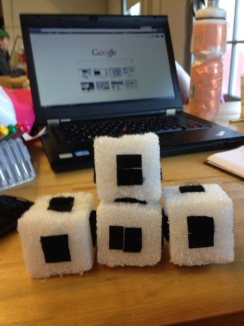
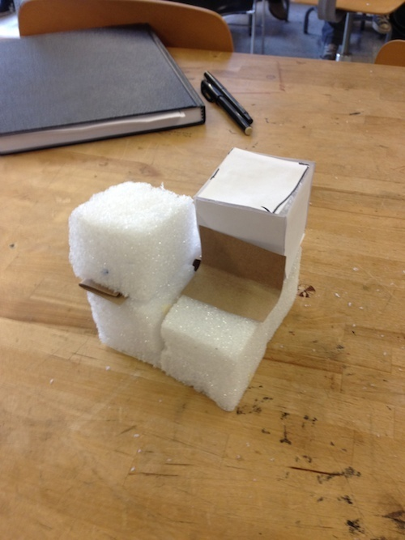
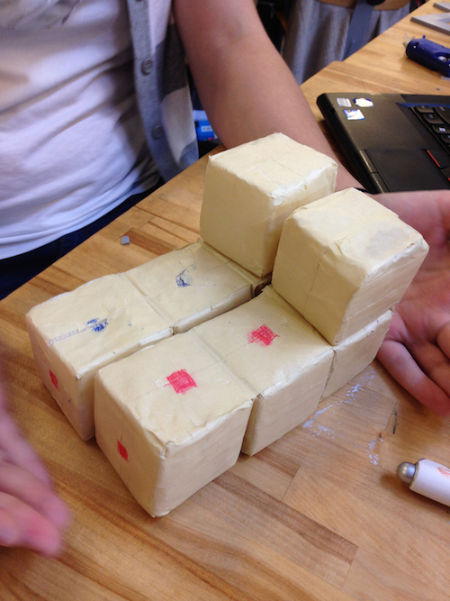
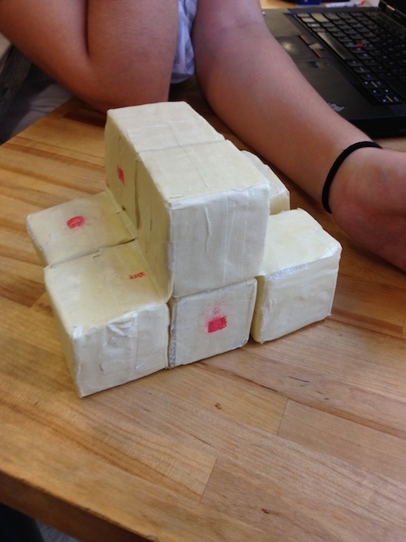
Full-Scale Modeling & User Testing
A full size model was created using cut cardboard and duct-tape. Evio, a five year old, was asked to play with the item. He began exploring the infinite number of shapes Kübu could become.
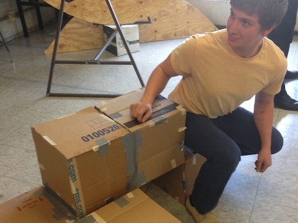
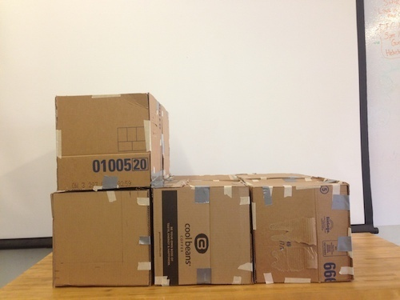
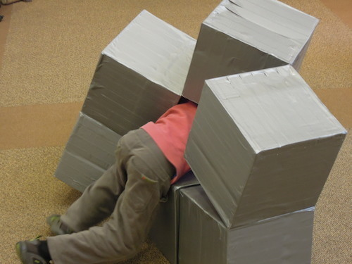
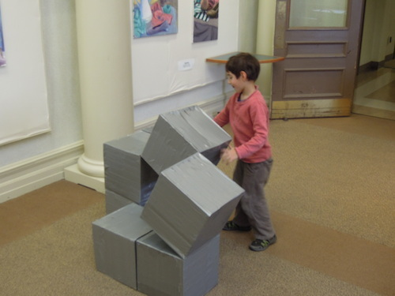
This video is a short time-lapse from when Evio interacted with Kübu. He seemed to really enjoy it and began using his imagination. When we asked him what he thought after thirty minutes of playing, he responded.
"It could be a house, or a rocket-ship, or ANYTHING!"
Final Prototyping
After we determined the configuration we wanted to pursue, we built our final prototype. The interior of the cubes are made from 11" polystyrene cubes. They are covered by rebonded foam and then finished with vinyl.
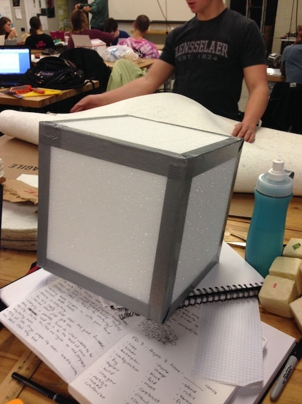

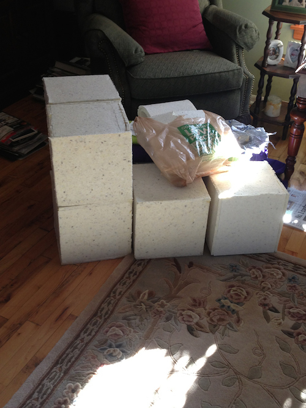
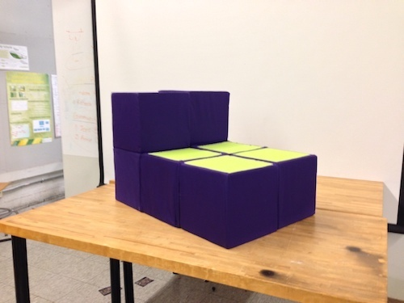
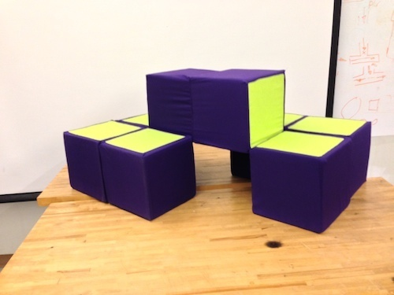
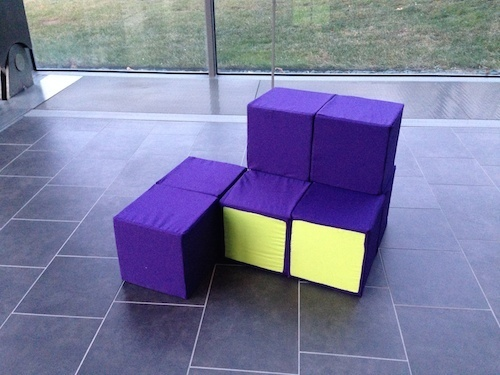
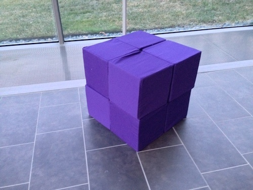
CAD Renderings
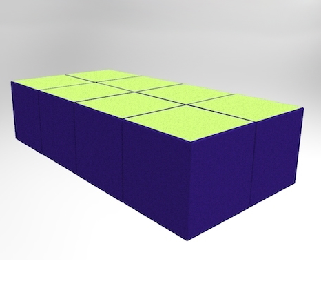

.jpg)
.jpg)
Finalization
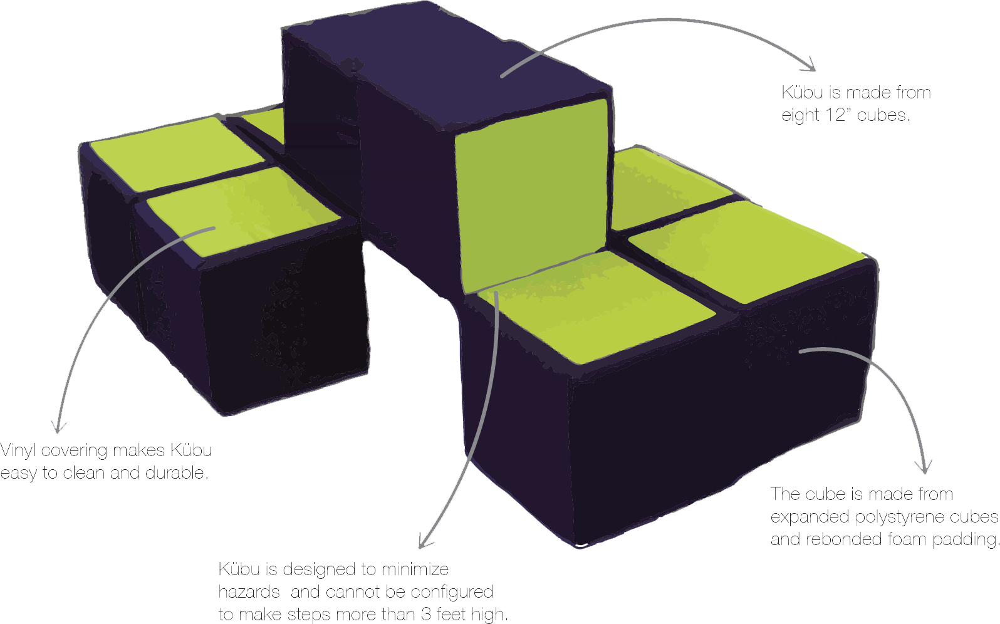
PDI Studio III, Rensselaer Polytechnic Institute, Fall 2013 | Collaborators: David Rosenberg, Selina Tedesco, and Andrea Ukleja